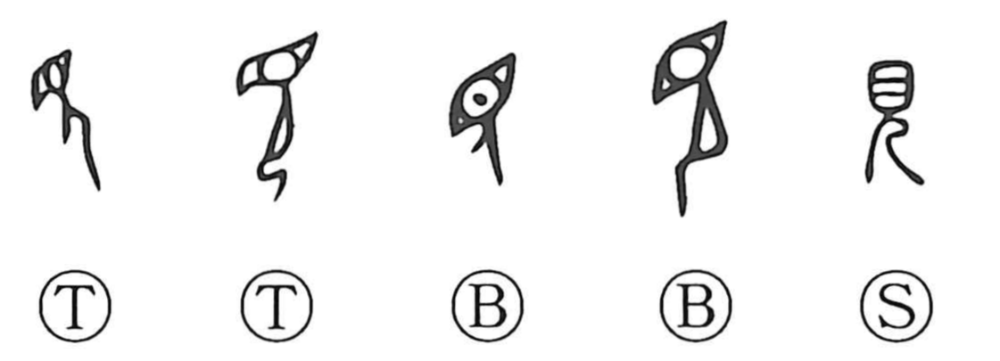

見

Kun: miru, mieru, miseru, arawareru | On: ken, gen
to see ・ to look ・ to be visible ・ to show ・ to appear
Explanation
An early pictograph, 見 shows a large eye set above the profile of a person (儿), highlighting the human eye to convey the act of seeing. In this older sense, to see was not merely to look, but to enter into an inner connection with what was seen. Gazing at the dense life of a forest or the flow of a river was understood as a way to draw the strong workings of their nature into oneself. This idea survives in early Japanese poetry as well: the Man’yoshū often uses expressions like miredo akanukamo, “though I gaze on it, I do not tire,” and the verb miyu, reflecting the belief that seeing could summon the spirit of things and replenish one’s vital force.